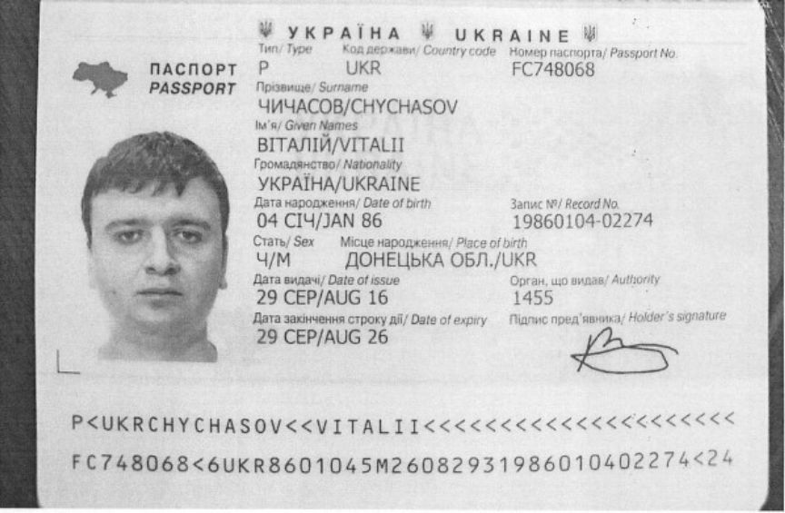
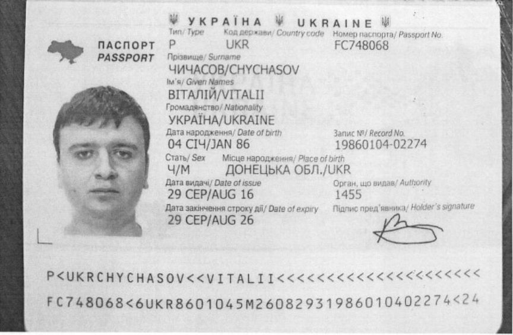

SSNDOB Marketplace Admin Imprisoned
A Ukrainian man was sentenced to federal prison for his role in the administration of SSNDOB Marketplace, a series of domains used to sell stolen personal information.

Vitalii Chychasov, 37, of Ukraine, was sentenced to eight years in federal prison for his role in an operation that generated $19 million from the sale of the personal information of millions of individuals over several years.
Law enforcement agencies seized several domains associated with the SSNOB marketplace on June 7, 2022. The seized domains include ssndob.ws, ssndob.vip, ssndob.club, and blackjob.biz.
During the investigation, the investigators made undercover purchases from the marketplace and paid in Bitcoin. Blockchain analysis led the investigators to a HitBTC account that had received approximately 44.99 bitcoin from the marketplace's wallet.
Information acquired from HitBTC revealed that the account belonged to Chychasov. The investigators also established that the IP address used to access the HitBTC account had also been used to access SSNDOB's servers on multiple occasions.
The investigators also linked Chychasov to a Bitfinnex account that had received approximately 53.6 bitcoin from SSNDOB from August 2017 through September 2018.
Chychasov was arrested in March 2022 while attempting to enter Hungary and extradited to the US in July 2022. He pleaded guilty to conspiracy to commit access device fraud and trafficking in unauthorized access devices in July 2023.
US District Judge Kathryn Kimball Mizelle sentenced Chychasov to eight years in federal prison on November 28. In addition to the prison sentence, he was ordered to forfeit the $5 million he acquired from operating the SSNDOB Marketplace.

Vitalii Chychasov's passport
Vitalii Chychasov, 37, of Ukraine, was sentenced to eight years in federal prison for his role in an operation that generated $19 million from the sale of the personal information of millions of individuals over several years.
Law enforcement agencies seized several domains associated with the SSNOB marketplace on June 7, 2022. The seized domains include ssndob.ws, ssndob.vip, ssndob.club, and blackjob.biz.
During the investigation, the investigators made undercover purchases from the marketplace and paid in Bitcoin. Blockchain analysis led the investigators to a HitBTC account that had received approximately 44.99 bitcoin from the marketplace's wallet.
Information acquired from HitBTC revealed that the account belonged to Chychasov. The investigators also established that the IP address used to access the HitBTC account had also been used to access SSNDOB's servers on multiple occasions.
The investigators also linked Chychasov to a Bitfinnex account that had received approximately 53.6 bitcoin from SSNDOB from August 2017 through September 2018.
Chychasov was arrested in March 2022 while attempting to enter Hungary and extradited to the US in July 2022. He pleaded guilty to conspiracy to commit access device fraud and trafficking in unauthorized access devices in July 2023.
US District Judge Kathryn Kimball Mizelle sentenced Chychasov to eight years in federal prison on November 28. In addition to the prison sentence, he was ordered to forfeit the $5 million he acquired from operating the SSNDOB Marketplace.